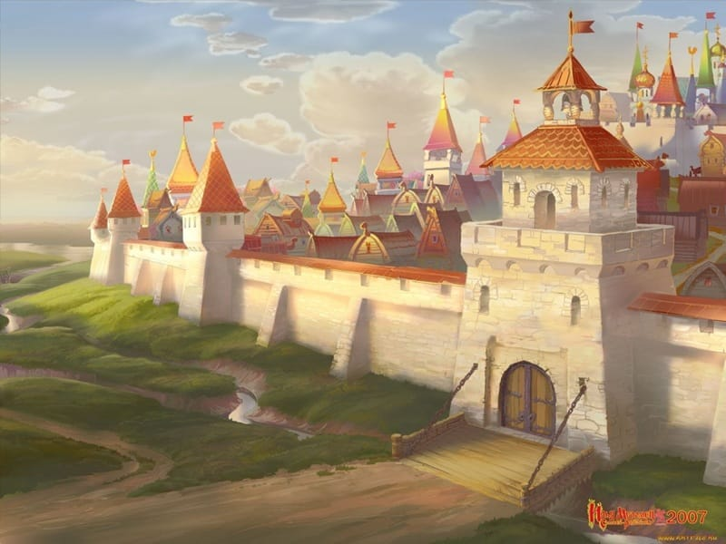
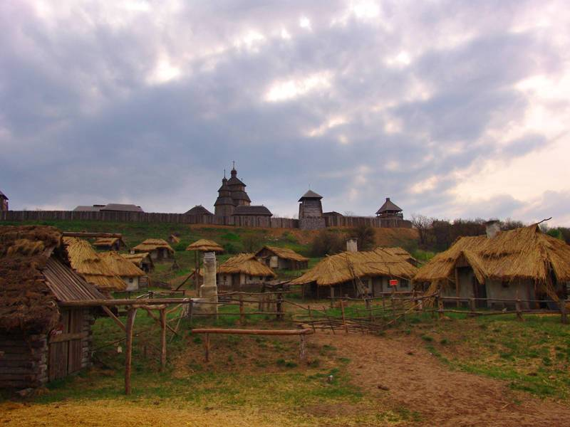
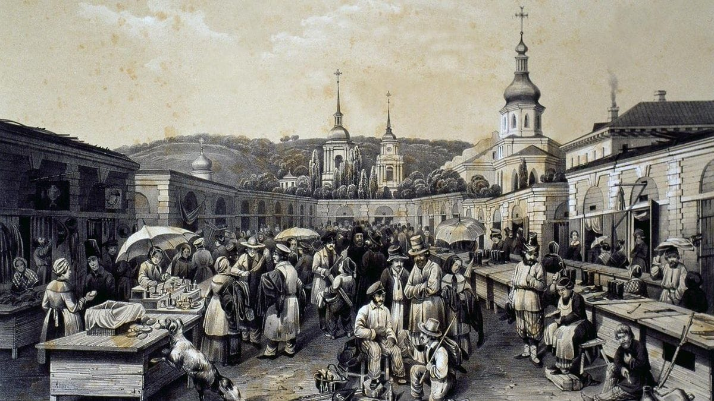
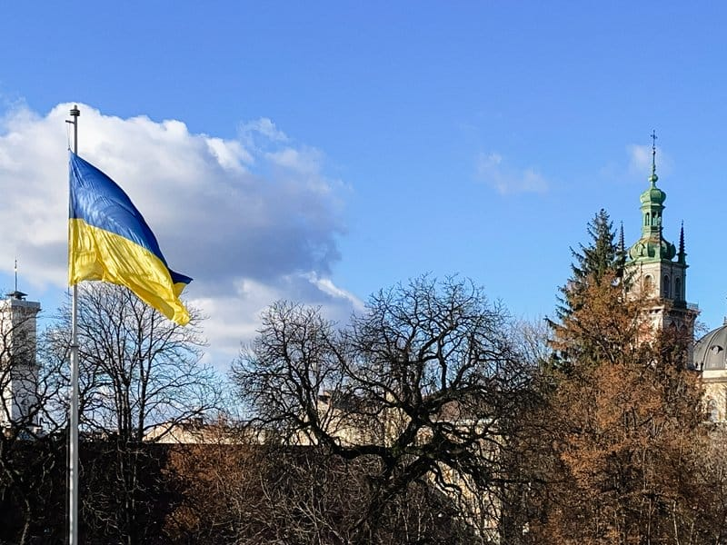

Україна крізь віки: від Русі до незалежності
Огляд ключових епох, що сформували українську державність, культуру та національну ідентичність
Витоки
Київська Русь
У IX столітті на берегах Дніпра постала Київська Русь - перша українська держава. За часів Володимира Великого (988 р.) було прийнято християнство, а Ярослав Мудрий заклав основи писаного права. Київ став одним із найбільших міст тогочасної Європи.

Козацька доба
Запорозька Січ і Визвольна війна
У XV-XVII ст. козацтво стало символом свободи й самоврядування. У 1648 році Богдан Хмельницький підняв повстання проти польського панування, що поклало початок Козацькій державі - Гетьманщині. Проте вона поступово занепала під тиском Москви й була остаточно ліквідована у XVIII столітті.

Відродження і трагедії
XIX-XX ст.
Творчість Тараса Шевченка пробудила національну свідомість. Після розпаду імперій у 1917–1918 рр. Україна проголосила незалежність, але утримати її не вдалось. У радянський час Голодомор 1932-1933 рр. забрав мільйони життів - цілеспрямований удар по українському народу.

Незалежність
1991 рік і сьогодення
24 серпня 1991 року Україна проголосила незалежність, яку підтримали понад 90% громадян. Революція Гідності 2014 року стала поворотним моментом у прагненні до європейського вибору. У 2022 році Росія розпочала повномасштабне вторгнення, але Україна продовжує боротись — як завжди у своїй тисячолітній історії.
